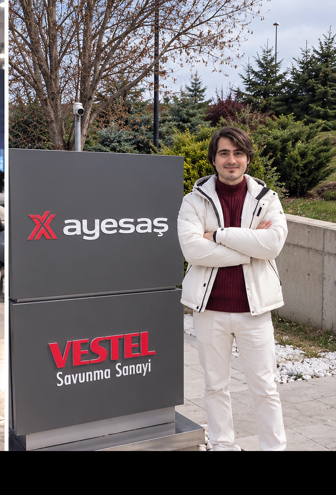
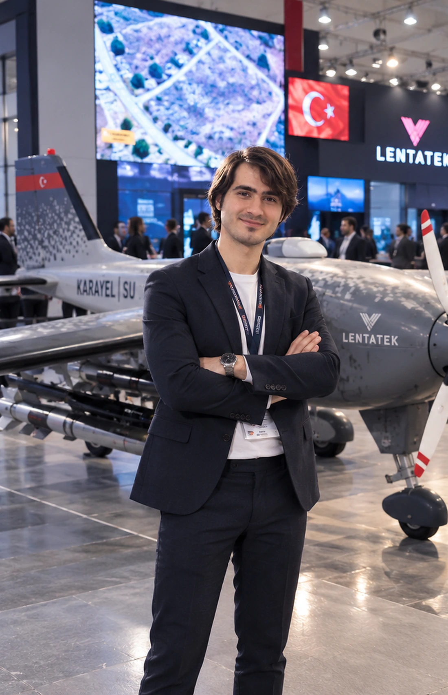
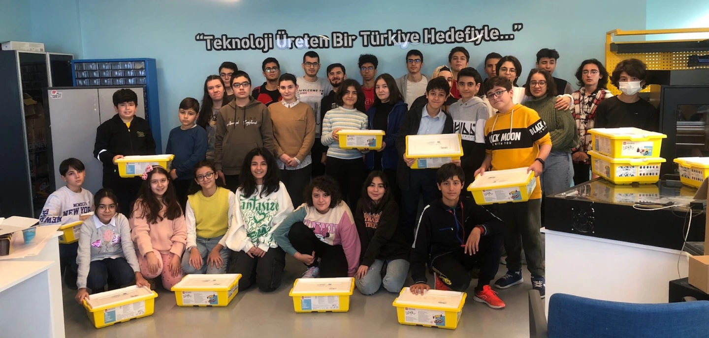

01 / Web applicationSoftware
Hayat Rehberi
Designed and developed a responsive, multi-module web platform with prayer schedules, Quran reading and audio, memorization practice, progress tracking, Islamic learning resources and integrated search.
I am a software engineering graduate developing web applications, browser extensions and automation tools. I am expanding my knowledge of AI, large language models and intelligent agents through learning and hands-on work.
Designed and developed a responsive, multi-module web platform with prayer schedules, Quran reading and audio, memorization practice, progress tracking, Islamic learning resources and integrated search.

Published a Chrome extension for controlling HTML5 video speed with 0.1× adjustments, keyboard shortcuts, 10-second skips, movable overlay controls and saved per-site preferences.

Interactive Quran reading and memorization with selectable Arabic text, audio repetition and speed controls, reading preferences, and optional Gemini-powered linguistic analysis.

Built a Node.js and Python news aggregation prototype using web scraping, JSON persistence, duplicate checking and Telegram Bot API messaging. Includes a recorded walkthrough; requires local configuration to run.
I want to investigate how computer vision can become more reliable and practical for autonomous systems, particularly for object detection and visual position estimation from aerial imagery. This direction grew out of my TEKNOFEST 2024 AI in Transportation work with the SEE AI team, where I explored YOLOv8, YOLOv9, SAHI and downward-facing camera approaches. In graduate study, I aim to evaluate accuracy, robustness and computational trade-offs under changing visual conditions, and connect these findings to maintainable software systems.

SEE AI team project studying aerial detection of people, vehicles and landing zones, comparing YOLOv8/YOLOv9 and SAHI alongside research into visual positioning. Our team ranked 11th of 198 teams in the preliminary design report evaluation; this was not the final competition ranking.

Oracle-based relational database coursework covering a stakeholder requirements survey, ER/EER and logical diagrams, normalized data relationships, Oracle SQL implementation and example queries for academic records.

An illustrated technical study of SOLID principles, creational, structural and behavioral design patterns, their engineering trade-offs and anti-patterns, supported by original C++ examples.
These are undergraduate project reports, not peer-reviewed publications.

Designed a web-based device and component management application with a React interface, Spring Boot REST APIs, PostgreSQL and PDF/HTML/JSON export functionality.
Watch project presentation
Developed Qt-based interfaces, worked with serial communications and configured Ubuntu environments for embedded systems workflows.

Taught software, robotics, electronics and introductory IoT to middle- and high-school students; mentored student projects, competition preparation and took part in project juries.
Atılım University · Ankara, Türkiye · 2025
TEKNOFEST AI in Transportation — preliminary design report evaluation only
Atılım University
02 Feb 2024
View certificate ↗ · Verify credential ↗16 Jan 2024
View certificate ↗2023 · Instructor recognition
View instructor recognition ↗Preliminary design report, YOLO/SAHI investigation and SEE AI team work.
Read case study ↗Internship work involving React, Spring Boot, PostgreSQL and export workflows.
Read case study ↗Beyond technology, work that connects with people. A short personal photo compilation from volunteer activities.
Personal photo compilationOpen to engineering, graduate research and thoughtful collaborations.